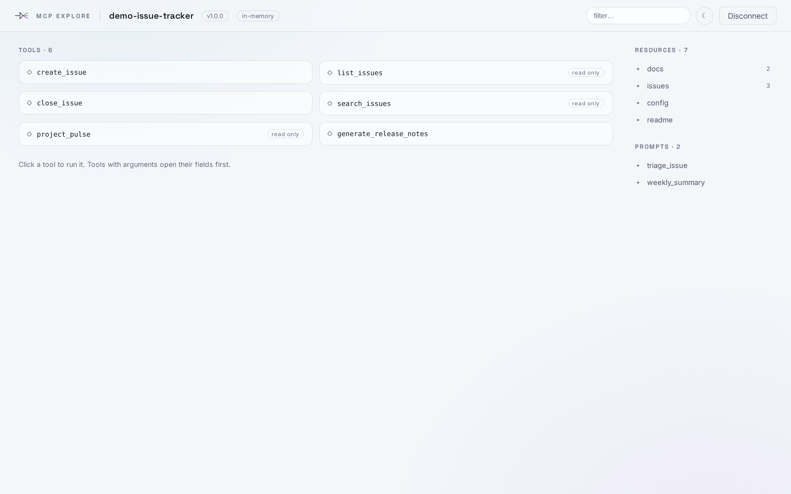
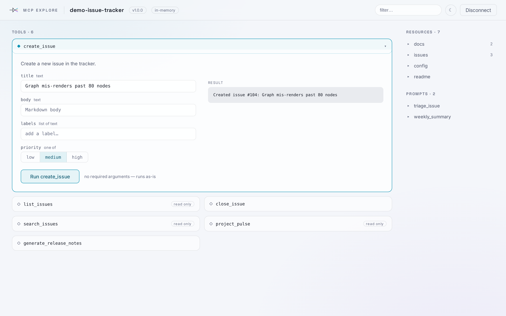
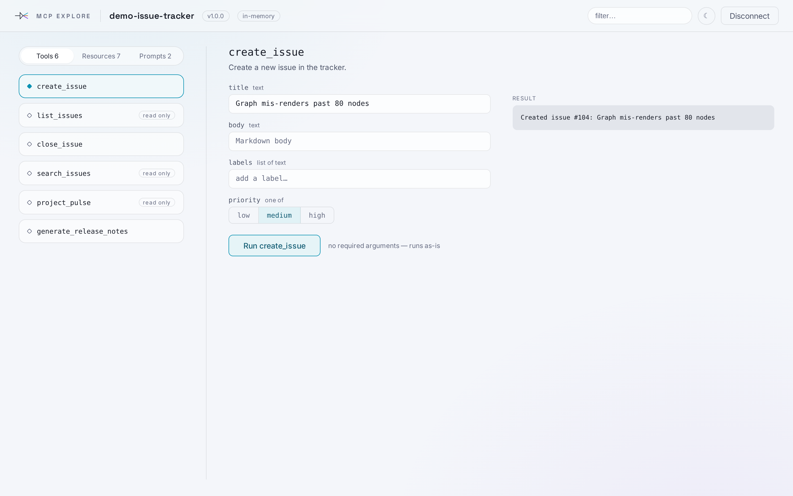
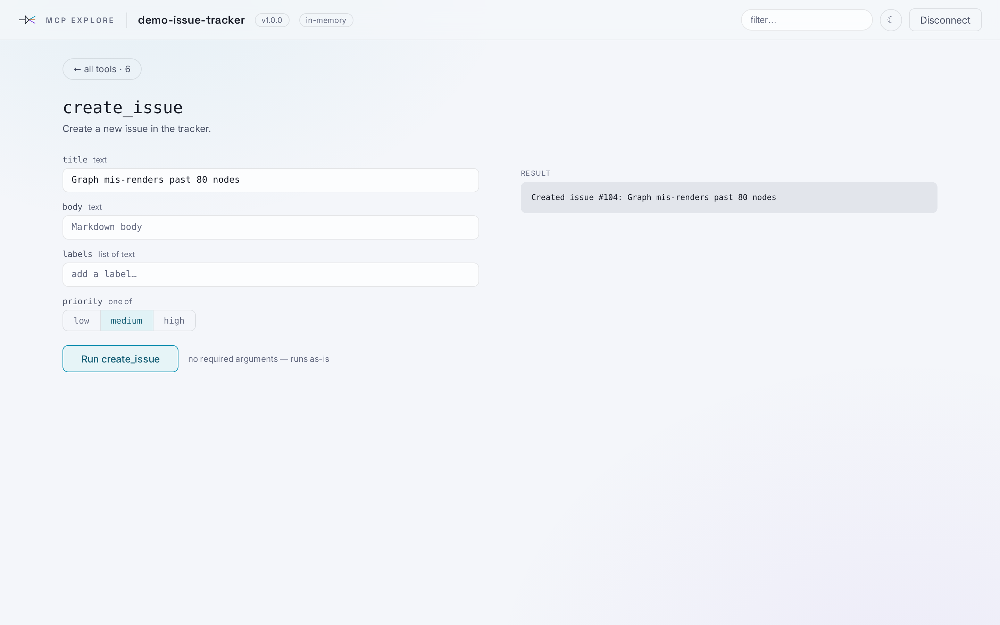
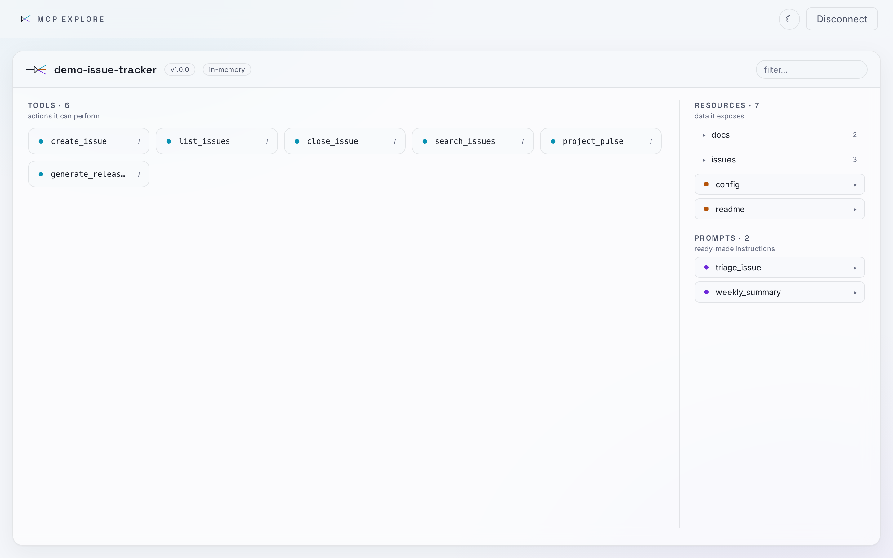
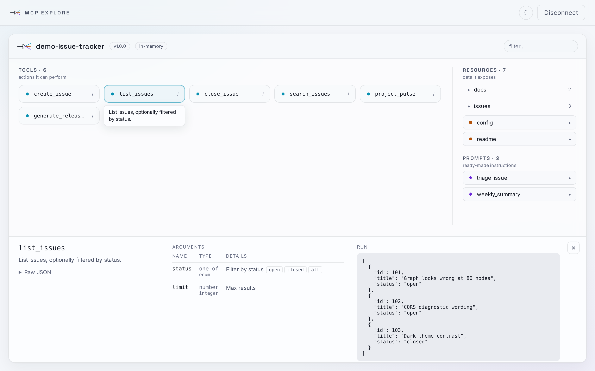

Where a tool's input fields and its result live, once one click runs a tool.
Tools are a two-column list; the clicked tool opens in place, fields left and result right, pushing the rest down. Rail stays on the right, quiet.
For: list stays visible, same grammar as the rail browser. Against: dead space at rest, and a tool low in a long list opens below the fold.

create_issue open
Left column browses tools, resources and prompts through one segmented control; the right side is always the active tool.
For: composed at rest and after a click — no dead half, no reflow, no scrolling to reach what you opened; the two competing card languages collapse into one column. Against: it is a right-hand pane, which you rejected for resources — though this one is permanent furniture rather than a panel that arrives.

The tool takes the whole screen; a back control returns to the list.
For: most focused, most room for large results. Against: the list disappears, and every tool switch costs two clicks.

The current deck at rest, and with the console drawer open on a run result.

